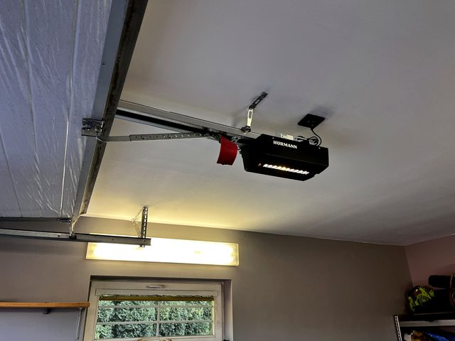
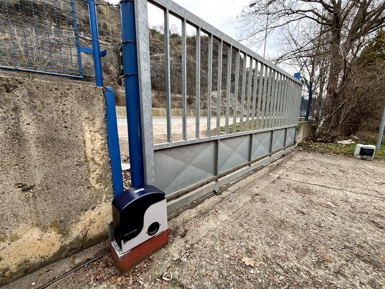

Vrata nejdou otevřít
Kontrolujeme pohon, odblokování, pružiny, vedení, napájení a mechanický odpor.
Služba a produkt
Automatická vrata mají být pohodlná, ale hlavně bezpečná a spolehlivá. Řešíme pohony, dálkové ovladače, fotobuňky, seřízení, servis i návrh nového řešení pro domy, firmy a SVJ.
Přímá odpověď
Automatická vrata je samostatná služba pro zákazníky, kteří nechtějí obecnou radu, ale konkrétní pomoc s vraty, bránou, pohonem, ovládáním nebo bezpečnostními prvky. Vrata Šnábl nejdřív ověří stav zařízení a potom doporučí opravu, seřízení, výměnu dílu, montáž pohonu nebo nové řešení.
Nejvíc pomůže lokalita, fotka celého zařízení, detail pohonu nebo štítku, popis závady a informace, jestli zařízení blokuje provoz. Díky tomu lze rychleji rozlišit urgentní servis od běžné poptávky.
Začínáme diagnostikou: zjišťujeme typ zařízení, stav mechaniky, chování pohonu, bezpečnostní prvky, ovládání a podmínky v místě. Teprve potom dává smysl říct, jestli je vhodná oprava, seřízení, výměna dílu nebo nové řešení.
U každé zakázky se snažíme vysvětlit, co je příčina a jaký další krok má ekonomicky i technicky smysl. To je důležité hlavně u starších vrat a pohonů, kde levná oprava může být jen krátkodobá.
Typické situace
Dotazy zákazníků se často liší formulací, ale technicky vedou ke stejným oblastem: mechanika, pohon, ovládání, fotobuňky, bezpečnost a lokální dostupnost servisu.
Kontrolujeme pohon, odblokování, pružiny, vedení, napájení a mechanický odpor.
Ověříme motor, řídicí jednotku, přijímač, ovladač, koncové polohy a napájení.
Prověříme nastavení, kabeláž, nečistoty, polohu a bezpečnostní funkci.
Zaměříme prostor a doporučíme vrata, bránu, pohon nebo modernizaci podle provozu.
Cenu ovlivňuje druh zařízení, rozsah závady, dostupnost dílů, potřeba seřízení mechaniky, typ pohonu, požadované ovládání, bezpečnostní prvky a lokalita. Proto nepíšeme univerzální cenu, která by byla zavádějící. Férovější je nejdřív vidět fotku nebo zařízení zkontrolovat.
Praktické doporučení, jasný další krok a možnost řešit servis, montáž i návazné úpravy jedním kontaktem. Pokud zařízení původně montoval někdo jiný, nevadí. Důležité je, aby bylo možné bezpečně určit stav a dostupnost řešení.
Fotografie realizací
Ukázky realizací a servisů pomáhají rychle poznat typ práce: garážová vrata, pohony, posuvné brány, servis motorů i zakázková řešení.


Proč Vrata Šnábl
Vrata Šnábl je lokální firma se zázemím v Červeném Újezdě, IČO 62986856 a dlouhodobým zaměřením na vrata, brány, pohony, závory a automatické dveře. V praxi to znamená přímou komunikaci, technické doporučení podle skutečného stavu zařízení a odpovědnost za servis i montáž.
Pracujeme hlavně pro Prahu, Prahu-západ, Kladno, Beroun a Středočeský kraj. Kromě rodinných domů řešíme také firmy, SVJ, spravované objekty a areály, kde je důležitá spolehlivost provozu.
Rychlost výjezdu vždy závisí na vytížení, lokalitě a typu závady. Férově proto nejdřív ověřujeme, co se děje, kde zařízení je a jaký další krok dává smysl.
Cena opravy vrat se nedá férově určit jen podle názvu závady. Rozhoduje typ vrat nebo brány, stav mechaniky, pohon, dostupnost dílů, rozsah seřízení a lokalita. Pro první orientaci pomůže fotka celku, detail pohonu a krátký popis problému.
Menší seřízení, ovladač nebo diagnostika mohou být hotové rychle, složitější závada závisí na dostupnosti dílu a stavu zařízení. Před prací se snažíme říct, jestli dává smysl okamžitý servis, objednání dílu nebo výměna části.
Servisujeme běžné značky vrat, bran a pohonů, například Hörmann, Wisniowski, NICE, CAME, FAAC, Sommer, Somfy, BFT, Roger, Benincà, LOMAX nebo DoorHan. U staršího zařízení bez štítku nejdřív ověříme stav a dostupnost řešení.
Typickým příznakem je nepravidelný chod, zastavování, hučení motoru bez pohybu, nereagující ovladač, časté ztrácení koncových poloh nebo opakované vypínání bezpečností. Závada ale může být i v mechanice vrat nebo brány.
Nepokoušejte se vrata opakovaně tlačit silou ani přetěžovat pohon. Zkontrolujte napájení, ovladač a viditelné překážky, potom zavolejte servis nebo pošlete fotku zařízení.
U mnoha pohonů existuje nouzové odblokování. Použijte ho jen tehdy, když víte, kde je a jak bezpečně funguje. Pokud jsou vrata těžká, poškozená nebo nevyvážená, je lepší zavolat servis.
U běžného rodinného domu dává smysl pravidelná kontrola při horším chodu, hluku nebo po delší době bez servisu. U firem, SVJ a průmyslových vrat je prevence důležitější, protože porucha může omezit provoz.
Životnost pohonu závisí na kvalitě motoru, hmotnosti vrat nebo brány, četnosti používání, nastavení síly, stavu mechaniky a prostředí. Dobře seřízené zařízení pohon výrazně méně namáhá.
Nouzové odblokování mechanicky odpojí pohon, aby šla vrata nebo brána ovládat ručně. Musí se použít opatrně, protože špatně vyvážená nebo poškozená vrata se mohou chovat nepředvídatelně.
Fotobuňky hlídají překážku v dráze vrat nebo brány. Když paprsek přeruší auto, člověk, zvíře nebo nečistota, řídicí jednotka může zastavit nebo vrátit pohyb kvůli bezpečnosti.
Zavolejte nebo pošlete fotku zařízení. Podle lokality, typu vrat nebo brány a příznaků navrhneme další krok.
Nezávazná poptávka